Module 5 Soil Data Sharing and Dissemination
5.1 Introduction
For more than a century, tremendous resources and scientific effort have been invested in collecting and analysing soil information across the globe (Arrouays et al., 2017). These data collection efforts, conducted through national soil surveys, research institutions, agricultural programmes, and environmental monitoring initiatives, represent one of the most comprehensive scientific data compilations worldwide. This data, often referred to as legacy data, holds extraordinary potential with applications spanning food security, climate change mitigation, land degradation assessment, and sustainable land management.
However, this accumulated soil knowledge remains largely inaccessible and unusable for integrated local, regional or global analyses. The challenge is its fragmentation into thousands of isolated data repositories, each maintained independently by different organisations using their own formats, naming conventions, units of measurement, and analytical procedures. When properly compiled, organised, and standardised, historical soil surveys can serve as basic input or validation data for Digital Soil Mapping activities (Medeiros et al., 2024). However, realising this potential requires solving the fragmentation problem through systematic standardisation.
In 2012, FAO formally established the Global Soil Partnership (GSP) to coordinate international efforts in soil governance and soil science. Within this framework, GSP mandated the International Network of Soil Information Institutions (INSII) to develop and implement GloSIS, the Global Soil Information System. Rather than attempting to centralise all soil data into a single organisation or location, GloSIS functions as a decentralised spatial data infrastructure that enables soil data management and sharing within a global standardisation framework. National soil institutes, research organisations, and other data holders maintain control of their data in their own systems but contribute that data following standardised formats and protocols for data preparation and sharing.
Making soil data usable, however, is not only about preparing it once. It is about keeping it online, discoverable, and ready to use by others. This included all types of soil data information, from point observations gathered in the field and laboratory, existing soil maps and soil property maps derived from Digital Soil Mapping. This is the role of a Soil Information System (SIS): a web-based platform that allows soil scientists to publish their own data on the internet, describe it properly so that others can find and trust it, and visualise it together with data from other providers.
In this module we focus on the SIS from the point of view of a soil scientist who has data to share. You will learn what the SIS is, how it standardises and shares your data so that it can take part in the wider GloSIS federation. The module introduces how to use the SIS web application to:
- publish soil profile/layer (point) data stored as CSV files;
- publish the raster maps you produce from soil observations and environmental covariates (the production of these maps is covered in module 3 - Digital Soil Mapping);
- explore your data in the built-in map viewer;
- combine existing maps into new ones with the Raster Calculator.
Designed for ease of use, the SIS operates fully within your web browser with no coding required.
5.2 The Soil Information System (SIS)
5.2.1 What is a Spatial Data Infrastructure?
A Spatial Data Infrastructure (SDI) is the combination of technology, standards, and agreements that lets people share geographic data over the internet in a consistent way. Instead of e-mailing files back and forth, an SDI publishes data through standard web services, so that any compatible application (a web map, a desktop GIS such as QGIS, or another institution’s platform) can connect to the same data and use it directly.
The SIS is an SDI specialised on soil information. It brings together, in one place and in a comparable form, the two kinds of products soil scientists generate:
- Soil profiles (point data): georeferenced observations of soil properties measured at specific sampling locations and depths.
- Raster maps (gridded data): continuous surfaces, typically produced by Digital Soil Mapping, that predict a soil property across an area from soil observations and environmental covariates.
5.2.2 What the SIS lets you do
As a soil scientist, the SIS gives you a place to:
- Publish your soil profiles and maps online, with a few clicks and without writing any code;
- Describe each dataset with proper metadata (who produced it, when, under which licence, covering which area and period) so that others can find it and cite it correctly;
- Visualise your data on an interactive map, together with data from other providers;
- Control what is shared—each dataset can be kept private or published, and sensitive sampling coordinates can be slightly blurred to protect data providers;
- Reuse the data through open standards, both inside the SIS and from external GIS software.
5.3 A node in the GloSIS federation
The SIS is not meant to be an island. It is designed to act as a node in GloSIS, the Global Soil Information System—a federation in which each participating institution or country runs its own SIS and keeps full control of its own data, while all nodes can still be searched and used together as if they were one. Your data stays with you; what is shared is access to it, in a common form.
Two things make this federation possible, and both happen automatically when you publish your data:
- A common vocabulary. Because every SIS describes soil data using the same GloSIS codelists for soil properties and laboratory procedures, a value published in one node means exactly the same thing in every other node.
- Common ways of sharing. The SIS publishes data through open standards from the Open Geospatial Consortium (OGC): maps are served so they can be viewed anywhere (Web Map Service, WMS), datasets are described so they can be discovered (Catalog Service for the Web, CSW), and soil profiles are served through the SIS data service. Any compatible system—another SIS node, or standard GIS software—can connect to that data without special arrangements.
You do not need to operate any of this yourself. Simply by publishing your profiles and maps as described below, you make your data ready to take its place in the wider GloSIS federation.
5.4 Standardisation of soil point data: The GloSIS ISO 28258 database
Most existing soil observations are documented as point descriptions within technical and scientific publications, comprising profile descriptions and horizon-level analytical measurements. While highly valuable, these datasets lack the harmonized and standardized structure required for comprehensive analysis and cross-project insights before its publication.
The International Organization for Standardization established ISO 28258 (“Soil quality—Digital exchange of information on soil and soil-related data”) as the international benchmark for digital soil data representation and exchange. ISO 28258 establishes the logical data organization and hierarchical relationships connecting soil observations, definitions of soil concepts following international conventions, metadata requirements and quality assurance procedures.
Module 1 demonstrated how to clean and harmonize raw soil measurements—validating coordinates, depth intervals, missing values, and out-of-range lab data—resulting in the exported ‘KSSL_clean.csv’ file. While this dataset is clean and structured, it requires a final standardization step before it can be loaded into a standard database.
When publishing data in the Soil Information System (SIS), the integrated SIS-ETL module automatically standardizes it according to ISO 28258 specifications. By adhering to this standard, the GloSIS database provides the necessary infrastructure for global soil data integration and interoperability.
Technically, the GloSIS database is a PostgreSQL/PostGIS relational database implementing the GloSIS data model. It stores soil observations in a harmonized, standardized, and quality-controlled format. By enforcing common database structures, controlled vocabularies, and validation rules aligned with ISO 28258, it ensures soil datasets remain consistent and comparable across different countries and projects. Ultimately, it serves as a central repository that seamlessly connects spatial sampling locations, analytical methods, and laboratory results worldwide.
The GloSIS database organizes data into the five standard soil-related categories, known as “features of interest”, each with specific subcategories:
Site: Represents the broader environment where soil investigations occur, capturing context such as terrain, climate, and land-use.Plot: A specific location for soil investigation where profiles and samples are collected. It is further classified into:Surface: A polygonal area where soil properties are assumed to be relatively homogeneous.TrialPit: A manually excavated pit for detailed soil examination.Borehole: A drilled hole for subsurface soil sampling.
Profile: A vertical sequence of soil horizons or layers at a given location (referred to asProfileElementin ISO 28258). This feature included the general descriptive information at profile level.Element– Subdivisions of a profile based on depth, further categorized as:Horizon– A natural, homogeneous soil layer formed by pedogenesis.Layer– An arbitrarily defined soil section for analysis at fixed depths.
Specimen– A physical sample extracted at a defined depth, typically analysed in laboratories for chemical and physical properties (referred to asSoilSpecimenin ISO 28258).
Each of these “features of interest” is represented by a dedicated table in the relational database. Because they describe distinct real-world entities, they store different types of attributes and metadata. The core challenge is translating raw soil data files into this structured database model as GloSIS. This process is facilitated by an ETL (Extract, Transform, Load) module integrated into the Soil Information System presented here.
The data ingestion into the database has several mandatory fields. Some of them are related to the position and date of the observations and others to the analytical data:
Profile Code, it identifies each unique profile in the database.LongitudeandLatitudestore the geographic location of the observations. Each horizon/layer within a profile has to have the same coordinates. The default coordinate system is EPSG:4326. Other coordinate systems can be used but must be properly defined during the standardisation process in the ETL.Sampling datestores the date when the survey was conducted. The date must follow ISO-8601 (“YYYY-MM-DD” format).UpperandLowerdepths. They serve to identify the upper and bottom boundaries of each soil horizon/layer.Soil property, which identify the name of each of the soil properties analysed within every soil horizon/layer, the measurement method utilized and the measurement units. When properly defined, the values of each parameter can be automatically transformed to the standard units of measurement in the GloSIS database.
Regarding the analytical data, each measured property and method has to be compliant with an entry in the GloSIS codelists, the shared vocabularies for soil properties and laboratory procedures.This ensures that every soil property and every laboratory procedure is referred to by the right, internationally agreed name as established within GloSIS. For example, a column of pH measured in water is linked to the codelist entry that identifies it precisely as pH in water, distinct from pH in KCl. The SIS does not alter your measurements; it ensures they are labelled correctly. Because every dataset in the SIS is described with these same terms, data from different providers and different countries can be compared directly and combined with confidence.
The GloSIS codelists for soil properties and laboratory procedures are published openly at https://github.com/glosis-ld/glosis.
A final feature of the ETL pipeline is automated data quality control (QC). It validates the input, identifies potential discrepancies in the dataset before transferring it into PostgreSQL, ultimately simplifying the data submission process while maintaining accuracy and comparability. The data validation in this step occurs at three stages, geographic (horizontal location), temporal (Sampling date), soil depth (vertical position) and analytical integrity (non valid data and data outliers). Analytical soil property values that fall outside feasible ranges are automatically detected and flagged for manual review and correction. All errors and warnings identified during the validation phases above are automatically compiled and reported in the main interface.
All mandatory fields and QC issues must be properly mapped or resolved during the ETL standardization process; otherwise, data ingestion into the database will fail. A detailed procedure on how to use the ETL is covered in the “Publishing soil profile data from a CSV” section below.
The GloSIS database uses the international ISO 28258 standard to transform unstructured point soil observations into a globally consistent, comparable, and quality-controlled format.
Data is organized into 5 core “features of interest” (Site, Plot, Profile, Element, and Specimen), allowing complex field and lab data to be accurately mapped into dedicated relational tables.
Successful data ingestion requires essential metadata (Profile Code, coordinates, ISO 8601 sampling dates, and horizon depths) along with mapping to official GloSIS codelists to ensure accurate measurement labeling and automatic unit standardization.
An integrated ETL pipeline automatically detects out-of-range analytical values and enforces data validation—all QC issues and mandatory fields must be resolved before data can be loaded into the central database.
5.5 Standardisation of soil raster data
Raster soil property maps are the primary output of the Digital Soil Mapping (DSM) workflow. By interpolating and modeling soil point observations, these continuous gridded surfaces generalize point-level analytical information across the entire area of interest. To serve as reliable inputs for decision-making, spatial analyses, and cross-project comparisons, these raster maps must be standardized before being published and distributed through the Soil Information System (SIS). Standardization ensures that continuous spatial predictions are correctly georeferenced, attributed with standard units, and enriched with complete metadata. When publishing raster soil maps in the SIS, datasets undergo a structured standardization process through the following metadata requirements:
File Format & Georeferencing: Maps must be uploaded as a single, properly georeferenced GeoTIFF file (.tif / .tiff). The SIS automatically extracts the spatial extent and coordinate reference system directly from the raster file.
Administrative & Project Alignment: Each map is linked to its target Country and parent Project to organize spatial data infrastructure systematically.
Property & Unit Standardization: The raster must be mapped to an agreed soil property (e.g., Soil Organic Carbon). Standard units of measurement are assigned automatically based on the property to guarantee consistency across different maps.
Temporal, Spatial & Statistical Metadata: To provide accurate context, maps require explicitly defined parameters:
Temporal context: The map creation date (YYYY-MM-DD) and the date range (Period start / Period end) of the input data used.
Vertical context: The upper and lower soil depth interval boundaries (in cm).
Statistical interpretation: Clear specification of pixel values—whether they represent a point prediction (MEAN), standard deviation (SDEV), or uncertainty (UNCT).
Governance & Cataloging: Authorship, organizational roles, and licensing are documented. Maps can be published directly to the central catalogue, enabling seamless discovery, visualization, and interoperability across the SIS map viewer and the broader GloSIS federation.
Detailed instructions for uploading and cataloging raster property maps are detailed in the “Publishing raster maps” section below.
5.6 Getting started: accessing the SIS
5.6.1 The map viewer
The map viewer (Figure 5.1) displays the published soil data on an interactive map: soil profiles appear as points (grouped into clusters when you zoom out), and raster maps appear as image layers you can switch on and off. From here you can pan and zoom, choose a base map, change layer transparency, click a profile to see its details, or click a raster to read the predicted value at that location.
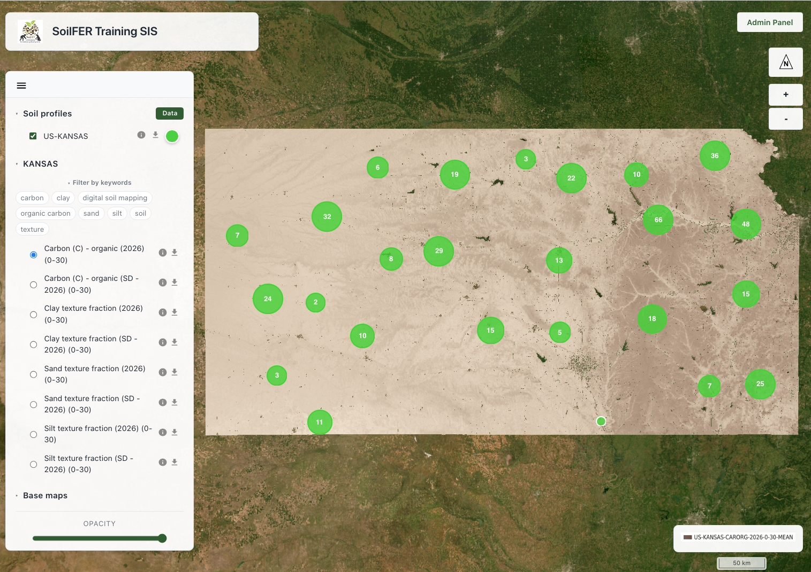
Figure 5.1: The SIS map viewer, showing soil profiles and a raster layer.
5.6.2 The Admin Panel
Publishing data is done from the Login/Admin Panel. Click the Login/Admin Panel button on the map viewer and sign in with the credentials provided by your administrator (Figure 5.2).
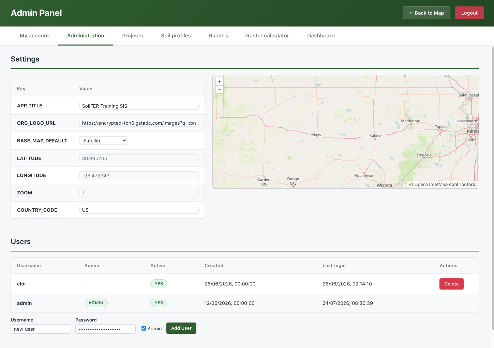
Figure 5.2: Accessing the Admin Panel.
The Admin Panel is organised into six tabs:
| Tab | What it is for |
|---|---|
| My account | Change your own username and password |
| Administration | Manage the node itself (administrators only) |
| Soil profiles | Upload and publish soil profile (point) data from a CSV file |
| Rasters | Upload and publish raster maps (GeoTIFF) |
| Raster calculator | Combine existing rasters into new maps |
| Dashboard | An overview of the data held on the node |
The following sections describe each of these tabs in turn. The Administration tab is only visible to users with administrator rights (see Administration).
5.7 My account
The My account tab lets you manage your own sign-in details (Figure 5.3). You can change your username and password; your current password is always required to confirm a change, and any field left blank is kept unchanged.
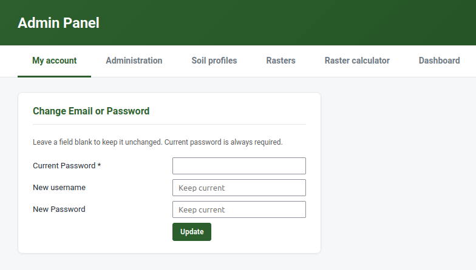
Figure 5.3: The My account tab, for changing your username and password.
5.8 Administration
The Administration tab is available only to users with administrator rights and is where the SIS node itself—rather than the data in it—is managed. It brings together four areas: Settings, Users, Software update, and GloSIS Federation.
5.8.1 Settings
The Settings area holds the node-wide options that control how the SIS looks and behaves, shown as a simple table of keys and values. From here an administrator can, for example, set the default map view—the area and zoom level the map viewer opens on—using the accompanying map. A change made here takes effect for everyone who uses the node.
5.8.2 Users
The Users area manages the accounts that can sign in to the Admin Panel. The table lists each user—username, whether they are an administrator, whether the account is active, and the dates created and last logged in. An administrator can add a user (username and password, optionally with administrator rights) and edit or deactivate existing accounts. Only administrators can see this area or grant administrator rights to others.
5.8.3 Software update
The Software update area shows the installed version of the SIS and lets an administrator check for updates against the project’s software repository. It is purely informational: it tells you whether a newer release is available but does not change anything—applying an update is done on the server by whoever maintains the installation, not from the web interface.
5.8.4 GloSIS Federation
Taking part in the federation through common vocabularies and standards (see Section 5.3) happens automatically as you publish. Connecting your node to the global GloSIS Federation—so that the GloSIS Discovery Hub and other nodes can find and query it—is a deliberate, one-time step carried out by the node administrator. It is switched off by default: a node never exposes itself to the federation until someone chooses to.
To enable it:
- Sign in to the SIS as an administrator.
- Open Administration → GloSIS Federation (Figure 5.4).
- Click Enable. The node issues a federation token (shown on the same panel) and opens a small set of read-only endpoints—a manifest of what the node holds, its soil profiles, and their observations.
- Provide that token and the endpoint addresses to the GloSIS Discovery Hub, which registers your node as part of the federation.
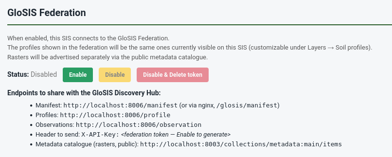
Figure 5.4: The Administration → GloSIS Federation panel, where federation access is enabled and the federation token is shown.
What is shared is exactly the soil profiles currently published on your node (those visible under Layers → Soil profiles)—nothing else can be read, and nothing can be written. Your raster maps are not part of this feed; they are already shared separately through the metadata catalogue and the map service.
You can click Disable at any time to stop sharing while keeping the token, or Disable & delete token to revoke access entirely and force a new token the next time federation is enabled.
- Federation access is opt-in and read-only—you stay in full control of your data.
- Only your published soil profiles are exposed; rasters are shared via the catalogue and map service.
- Enabling it registers your SIS as a node that others can discover and query through the GloSIS Discovery Hub.
5.9 Publishing soil profile data from a CSV
Soil profile data is published from the Soil profiles tab of the Admin Panel. The SIS reads a single CSV file in which each row is a soil sample (a depth layer of a profile) and each column is an attribute—an identifier, a coordinate, a depth, or a measured property. A good starting point is the cleaned dataset produced earlier in this manual (for example, the KSSL_cleaned.csv file from the Soil Data Preparation module).
The CSV can contain up to 200,000 data rows and be at most 50 MB. Larger datasets should be split before uploading.
The workflow has five steps, all on the same page.
5.9.1 Step 1 — Upload the CSV file
In the Soil profiles tab, open the Upload CSV section, click the file selector, choose your .csv file, and press Upload CSV (Figure 5.5). The file is uploaded to a temporary working area; nothing is published yet.
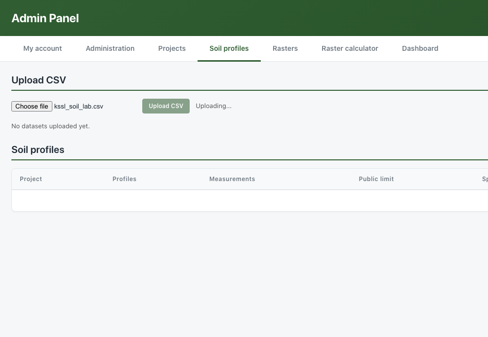
Figure 5.5: Step 1: Selecting and uploading the CSV file.
5.9.2 Step 2 — Preview the data
Once uploaded, expand the preview to check that the file was read correctly—that columns are separated properly and values look as expected (Figure 5.6). Use the Previous / Next buttons to page through the rows. This is the moment to catch obvious problems (wrong separator, shifted columns) before going further.
5.9.3 Step 3 — Describe the dataset (metadata)
Next, describe the dataset so that others can understand and cite it (Figure 5.6):
- Project — select the project this data belongs to, or create one with + Add new project….
- Abstract — a short description of the dataset.
- Licence — the terms under which you share the data (e.g. CC BY, CC BY-SA, CC BY-NC, CC0).
- EPSG code — the coordinate reference system of your coordinates. The default is 4326 (WGS84, decimal degrees), which is recommended.
- Authors — the organisation(s) and people responsible, with their role. You can add new organisations and individuals inline.
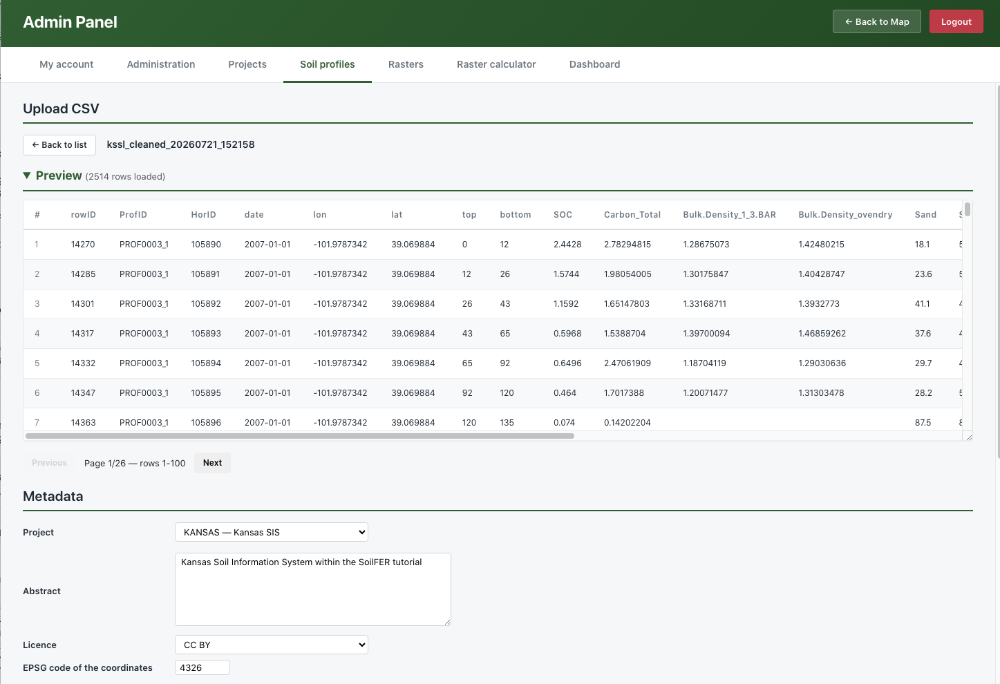
Figure 5.6: Steps 2 and 3: previewing the uploaded data and describing it with metadata.
5.9.4 Step 4 — Standardise your columns
The SIS now needs to know what each column of your CSV means. In the standardisation table, each row corresponds to one column of your file, and you assign it a destination in the soil data model (Figure 5.7). The essential destinations are:
| Your column holds… | Destination | Notes |
|---|---|---|
| Profile / sample identifier | Profile code | Rows sharing a code are merged into one profile |
| Longitude (X) | Coordinate | Decimal degrees, −180 to 180 |
| Latitude (Y) | Coordinate | Decimal degrees, −90 to 90 |
| Sampling date | Sampling date | Format YYYY-MM-DD |
| Upper depth | Element upper depth | Whole cm, top of the layer |
| Lower depth | Element lower depth | Whole cm, must be greater than the upper depth |
| A measured soil property | Result value | Choose the property, analytical procedure and unit |
For each measured property, you also indicate its GloSIS property, analytical procedure, and unit of measurement. If your values are reported in a different unit, the SIS converts them to the standard unit automatically. Optional destinations include plot type (e.g. TrialPit, Borehole), altitude, positional accuracy, and horizon designation.
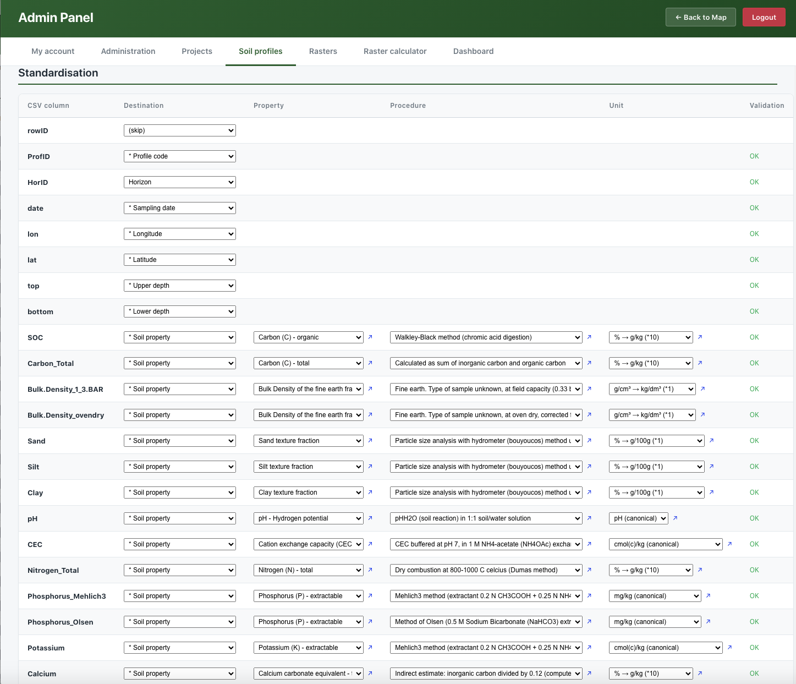
Figure 5.7: Step 4: standardising the CSV columns against the soil data model.
5.9.5 Step 5 — Validate and ingest
Before the data is stored, press Validate. The SIS runs a series of quality checks and reports any problems per column (Figure 5.8):
- Coordinates fall within valid ranges, and at least 95% of the points lie within the expected country boundary;
- Depths are whole numbers, the upper depth is smaller than the lower depth, and layers within a profile are contiguous;
- Property values fall within scientifically plausible ranges for each property (out-of-range values are flagged as potential outliers).
Use Save to keep your metadata and standardisation settings. When validation passes, ingest the data: the SIS writes the profiles, elements (layers), and measured results into the database, and your points become available in the map viewer.
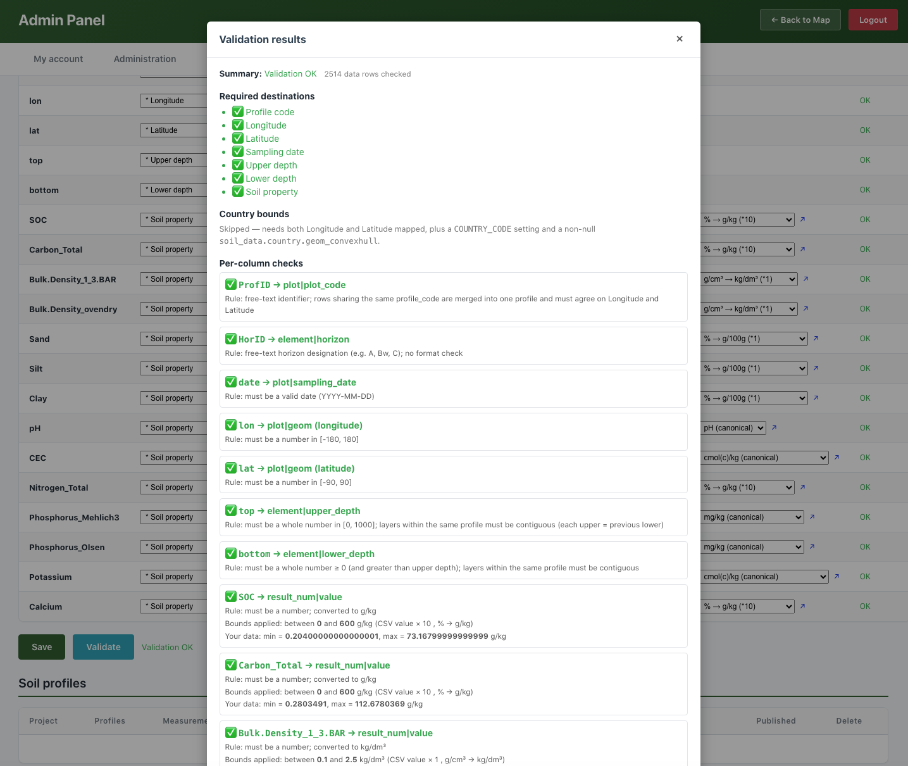
Figure 5.8: Step 5: Validation report before ingestion.
- Correct any critical issues (invalid coordinates, impossible depths) before ingesting.
- Warnings (e.g. unusual property values) should be reviewed; you may proceed if the values are scientifically justified.
- Each upload is tagged with the source file name, so a dataset can be re-uploaded or removed cleanly later.
Once the data has been validated, the Validation status appears in the dataset list (Figure 5.9).
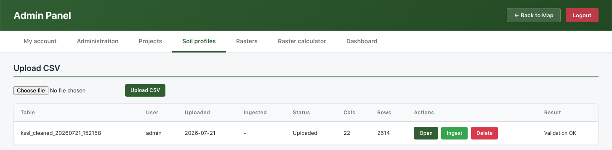
Figure 5.9: Step 5: Status of the validation.
Now, the data is standardized and ready for ingestion into the Postgres database using the ‘Ingest’ button. Once ingested, the new status and data details will appear in the dataset list (Figure 5.10).
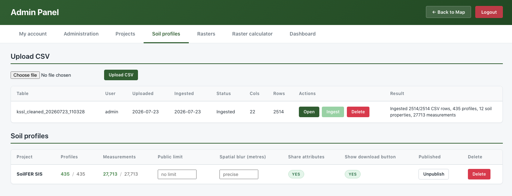
Figure 5.10: Step 5: Status of the ingestion
The data is now properly stored in the Postgres database and is ready for visualization on the SIS main page.
5.10 Publishing raster maps
Raster maps—the gridded predictions you produce by Digital Soil Mapping—are published from the Rasters tab of the Admin Panel. The SIS accepts a single GeoTIFF file (.tif / .tiff) per upload and publishes it so that it can be viewed in the SIS (and in standard GIS software) and, if you wish, described in the catalogue so others can find it.
Open the Upload GeoTIFF section and complete the form (the steps below correspond to the sections of that form).
5.10.1 Step 1 — Select the GeoTIFF
Choose your .tif or .tiff file. The raster must be properly georeferenced; the SIS reads its spatial extent and coordinate system directly from the file. The whole upload form is shown in Figure 5.11.
5.10.2 Step 2 — Location and project
Select the Country the map covers and the Project it belongs to (or create a new project inline; a new project needs a short ID, a name, and a description).
5.10.3 Step 3 — Soil property and units
Indicate which soil property the map represents (for example, soil organic carbon), choosing from the list or adding a new property. The unit of measurement is offered automatically based on the property. This is what allows the map to be compared and combined with others consistently.
5.10.4 Step 4 — Dates, depth and statistics
Document the temporal and vertical context of the map:
- Created on — the date the map was produced (
YYYY-MM-DD). - Period start / Period end — the oldest and most recent dates of the data used to produce the map.
- Depth — the soil depth interval the map refers to (upper and lower, in cm).
- Statistics — what the pixel values represent: MEAN (the prediction), SDEV (its standard deviation), or UNCT (uncertainty).
5.10.6 Step 6 — Review and upload
The form shows a preview of the generated file name that the map will be stored under, built from the information you provided. Review the entries and press Upload (Figure 5.11). The SIS first inspects the GeoTIFF to confirm it is valid, then registers and publishes it. Once finished, the map is available as a layer in the map viewer and, if you choose to, as a record in the catalogue.
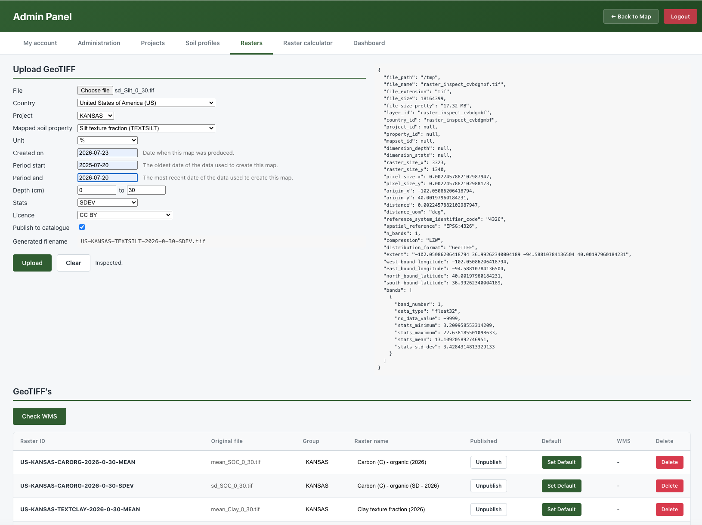
Figure 5.11: The Upload GeoTIFF form, where the raster map and its metadata are entered together.
- Although the SIS accepts raster property maps with different raster definitions, some features (such as the ‘Raster Calculator’ and ‘Recipe creation’) require rasters to have the exact same definition.
- It is highly recommended to align your rasters prior to uploading them to the SIS.
Once uploaded, your map can be viewed in the SIS (and in any compatible GIS) and, if you ticked Publish to catalogue, can also be discovered by others—in your own SIS and across the GloSIS federation.
5.11 The Raster Calculator
The Raster Calculator (located under the Raster Calculator tab in the Admin Panel) allows you to create new maps by combining existing ones directly within the SIS. It is highly suited for rule-based analyses, such as determining land suitability—for example, combining maps of pH, organic carbon, and depth into a single suitability map.
The calculator operates using recipes A recipe is a saved set of rules that takes one or more published rasters as inputs and produces a new raster as an output. Each input is scored using a simple threshold rule, and the scores are aggregated into the final result.
5.11.1 Creating a recipe
Recipes function as formulas that calculate secondary rasters based on reclassified combinations of existing ones. They allow you to combine binary-classified soil property layers using specific threshold values defined in the recipe. This process produces a new raster that summarizes the combined, reclassified original data.
For example, you can generate composite soil threat maps using individual sensitive soil raster maps (e.g., acidification, erosion, compaction, and sealing). By setting threshold values for each individual threat, the recipe produces a categorical map indicating the total number of soil threats occurring at any given location.
How to create a new recipe:
- Navigate to the Raster calculator tab to view existing recipes, their statuses, and their last run times.
- Click + New Recipe to open the editor ((Figure 5.12).
- Choose the Project (defaults to DST) and the mapped property for the output (defaults to SUITABILITY), or add new ones inline.
- Review the recipe identifier and description, which the SIS will propose automatically.
In this example, we will generate a new raster (KSSL threats) for the KANSAS project, which combines the pH, organic carbon, bulk density, and sand content layers. Each input raster is first reclassified into a binary (0-1) map based on the thresholds defined in the table. Finally, these binary layers are summed up to produce the overall threat map.
5.11.2 Adding input layers and thresholds
Click + Add layer to add an input row, then for each row (Figure 5.12):
- pick a Layer from the published rasters (its Min and Max are shown to guide you);
- set a Threshold—the cut-off value that splits the layer;
- set the Above score (given to pixels at or above the threshold) and the Below score (given to pixels below it). The defaults are 1 and 0, which you can change for custom scoring.
In other words, each input map is reclassified into scores by its threshold, and the SIS then aggregates the scored inputs into the output map. Add as many input layers as your rule requires; remove a row with its delete button.
5.11.3 Running the recipe
Press Run to execute the recipe (Figure 5.12). The calculation runs in the background; the recipe list shows its status (queued, running, completed, or failed) and the time of the last run. When it completes, the result is registered as a new raster layer—available in the map viewer just like any uploaded map, and ready to be combined again in further recipes.
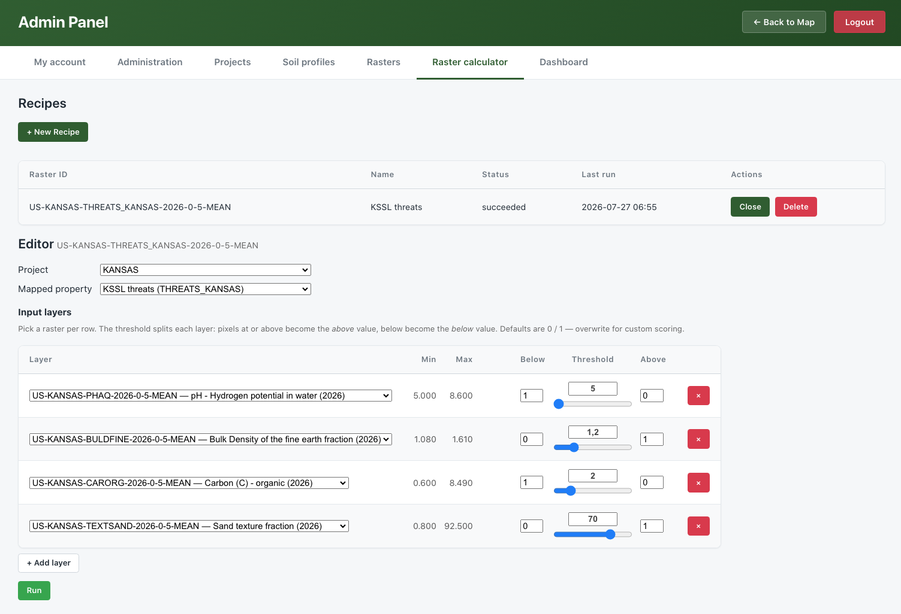
Figure 5.12: The Raster Calculator recipe screen: the output project and property, the input-layer table with thresholds and scores, and the recipe list with its Run button and status.
5.11.4 Inspecting the result
Once the recipe has run, open the resulting map in the map viewer (see Section 5.12) and click any pixel to see how its value was built up (Figure 5.13). For each location, the SIS shows the original value of each input layer, the score each one received after being reclassified by its threshold, and the sum of those scores—the value of the resulting map. This makes the calculation fully transparent and easy to check.
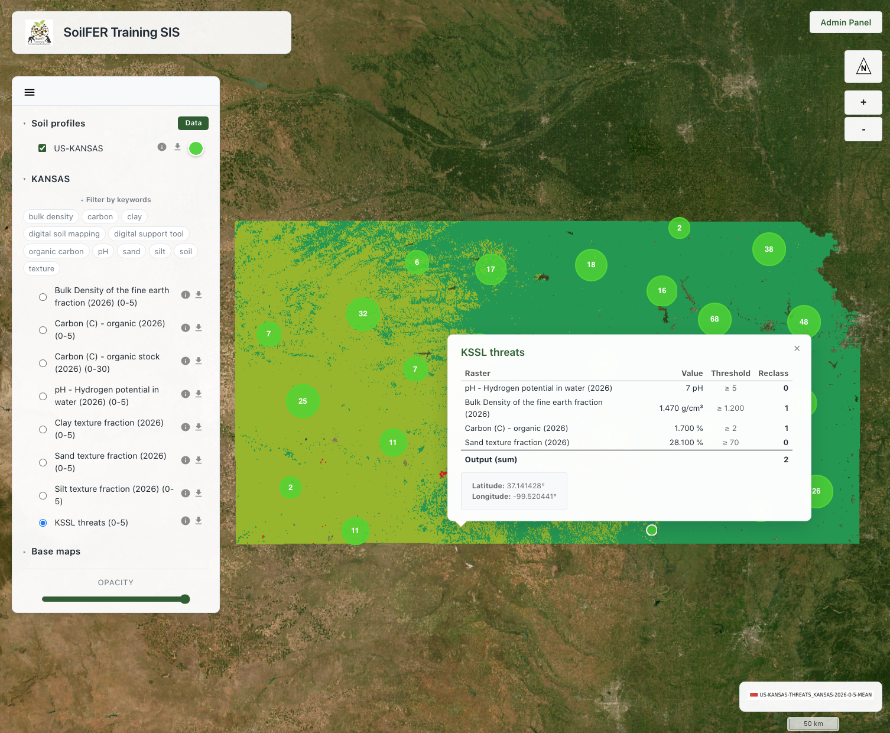
Figure 5.13: Inspecting a pixel of the resulting map: each input layer’s original value, its score after reclassification, and the sum that forms the result.
This recipe approach allows us to generate secondary data that identifies where multiple critical soil properties co-occur, helping us better understand the joint limitations of the soil at each location.
- Inputs are published rasters; the output is a new raster you can view, share, or reuse.
- Each input is split by a threshold into above / below scores, then the scores are combined.
- Recipes are saved and re-runnable, so an analysis can be repeated as the underlying maps are updated.
5.12 Exploring data in the map viewer
Once data has been published, return to the map viewer to explore it (Figure 5.14). From the viewer you can:
- Toggle layers on and off to control what is shown;
- Change the base layer—the background map, such as a street map, satellite imagery, or terrain;
- Adjust transparency of a raster to see what lies beneath it;
- Filter the raster layers by keywords drawn from each layer’s metadata, to quickly find the maps you are interested in;
- Click a soil profile to inspect its attribute data—location, depths, and the analytical soil properties measured for each layer; the Data/Hide button shows or hides this attribute table;
- Click a raster to read the predicted value at that point;
- Download a layer—both raster maps and soil profile (point) datasets can be downloaded for use in other software;
- View a dataset’s metadata (raster or point), presented in the standard spatial format (ISO 19115/19139), so its origin, authors, licence, spatial extent and date are clear;
- Zoom to spread out clustered points and inspect individual profiles.
This makes the viewer a quick way to validate what you have just published—confirming that points landed where expected and that maps display with sensible values—before sharing the SIS address with colleagues.
Clicking the ‘Data’ button in the soil profiles banner will display detailed information about the on-screen profiles and layers in both a table and a bar chart. This chart allows users to explore how soil properties vary with depth across different soil profiles.
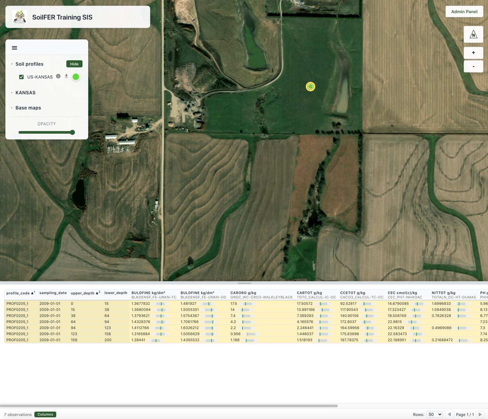
Figure 5.14: Exploring published profiles and maps in the SIS viewer.
5.13 Dashboard
The Dashboard tab gives an at-a-glance overview of everything held on the node (Figure 5.15). Summary cards show the totals—such as the number of soil profiles, rasters and projects—alongside charts that summarise the data: profiles and rasters per project, the most frequently measured soil properties, profiles sampled per year, the distribution of sampling depths, and the range of values recorded for each property. It is a quick way to understand what a node contains and to spot gaps or anomalies.
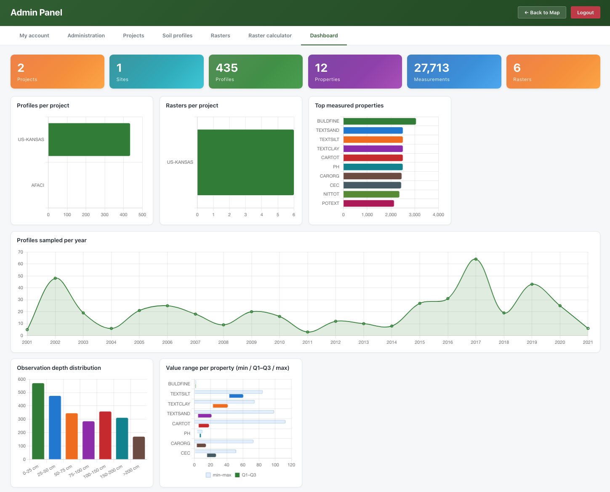
Figure 5.15: The Dashboard, summarising the soil profiles and maps held on the node.
5.14 Summary
In this module you have seen how the Soil Information System turns isolated soil data into a shared, discoverable, and reusable resource. As a soil scientist you can, entirely from a web browser, publish your soil profile points from a CSV file and your raster maps as GeoTIFFs, describe them with proper metadata, explore them in the map viewer, and derive new maps using recipes within the Raster Calculator. As you publish, the SIS standardises your data against the GloSIS codelists and shares it through open standards—so that the data you contribute is not only available in your own SIS, but ready to take its place as a node in the wider GloSIS federation.